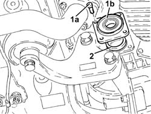
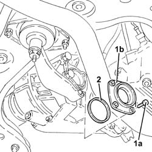

2110D54 r/h flange on differential - r + r with intermediate drive shaft removed
- Path
- Procedures > 21 GEARBOX > 2110 MANUAL GEARBOX AND DIFFERENTIAL > 2110D manual gearbox differential > 2110D54 r/h flange on differential - r + r with intermediate drive shaft removed
- Kind
- repair procedure (removal / refitting; the operation number is the code)
- Applies to
- engines: 3.2 V6, 1.9 JTD 8V, 1.9 JTD 16V; all production periods
- Interactive page
- https://sloeber94.github.io/elrnDB-a147/en/#/3025155
Applies to: engines: 3.2 V6; all production periods
1. Undo the bolts (1a) and remove the right flange on the differential (1b).
2. Remove the adjustment shim.

Applies to: engines: 3.2 V6; all production periods
Fit the right flange on the differential complete with scraper ring and fix it tightening the bolts to the recommended torque.
 | Fastening | Component | Ø | Value (daNm) |
|---|---|---|---|---|
- | - | - | - | - |
Applies to: engines: 1.9 JTD 8V; all production periods
2110D52 l/h flange on differential - r + r with drive shaft removed
Applies to: engines: 1.9 JTD 16V; all production periods
1. Undo the bolts (1a) and remove the right flange on the differential (1b).
2. Remove the adjustment shim.

Applies to: engines: 1.9 JTD 16V; all production periods
Fit the right flange on the differential complete with scraper ring and fix it tightening the bolts to the recommended torque.
| Fastening | Component | Ø | Value (daNm) |
|---|---|---|---|---|
- | Bolt | MAN G/BOX DIFF SEALING FLANGE/S | M8 | (Differential side) 2.3 ÷ 2.8 |